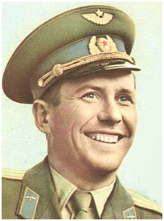

Главное меню:
Політ космічного українця
Юрій ДОРОШЕНКО
 Нещодавно українство мало б відзначати 79-
Авторові цих рядків, як журналістові, свого часу пощастило особисто зустрічатися з Павлом Романовичем. Потім я часом телефонував йому з проханням прокоментувати події у житті українців Москви. Але головне -
Цікаво, цю зустріч організувала активістка Товариства „Славутич”. „Павло Романович радо зустрічається з земляками, ніколи не відмовляє”, -
У призначений мені час виходить середнього зросту, трохи повнуватий, але дуже жвавий чоловік, з його обличчя не сходить посмішка. Голос бархатистий. „Ех яким він хлопцем був!”. Починає розмову українською мовою, розпитує про Київ, про мою газету, а потім, коли переходимо безпосередньо до інтерв’ю і я вмикаю диктофон, переходить на російську. Вибачається, каже, що мову знає, але все життя живе в Москві і вже терміни рідною мовою даються складніше.
Розмова з Поповичем це ціле свято: блискучий оповідач, він умів заворожувати слухача. Жартівливий, із приповідками, постійно переходив на рідну, українську... Пригадую, як він почав розповідати про те якою красивою з космосу є наша планета і при цьому його очі світилися молодецьким блиском. Було зрозуміло, що хоч від того часу минуло кілька десятків років, але й зараз, як би була змога, він все б віддав, щоб ще раз побачити це видовище. Навіть пригадуючи про свій політ, він подумки був там, далеко від Землі... Дитинство, підготовка до польоту, Юрій Гагарін, інопланетяни... Півтори години нашої розмови пролетіли, мов на космічній швидкості.
Під час інтерв’ю Павло Романович на маленькому шматочку паперу з якогось довідника малював мені, невігласу, те, як здіймається ракета з землі, мимохідь креслив формули. Коли ж ми скінчила бесіду я звернувся до нашого космічного земляка: „Павле Романовичу, подаруйте на згадку отого папірця”. Він посміхнувся та підписавши (до речі, написав українською „Павло Попович”), простигнув мені. Так в моїй журналістській колекції з’явилася маленька реліквія – нотатки космонавта Поповича.
Сьогодні я тримаю їх перед собою і думаю, чому ми повинні низько вклонитися цій людині? По-
Доля так визначила, що Павло Романович усе життя найбільше любив небо та Україну, навіть помер на нашій землі, під українським небом, але його поховали в Москві. Йому навіть на знайшлося місця на престижному Новодєвічєвому, чи Ваганьківському цвинтарі. Залишається вірити, що попри все, душа Павла Романовича тепер буде завжди дивитися з неба на Україну, шукати маленьку цяточку, яка зветься Узин, що на Київщині, де він уперше побачив світ.
Пропонуємо матеріал, зроблений мною після розмови з Павлом Поповичем. Він побачив світ в газеті „Україна молода” 1997 року. Сподіваємося, що він зацікавить читачів, адже вийшов ще в „доінтернетні” часи, а тому доступ нині до них обмежений. Це ще одна маленька данина великому Українцеві, який гордо підняв своє національне „Я” до зірок. Виніс на космічну орбіту українську мову, проспівавши чудову народну пісню. Сподіваємося, що пам’ять про Павла Поповича назавжди залишиться в серцях нашого народу.